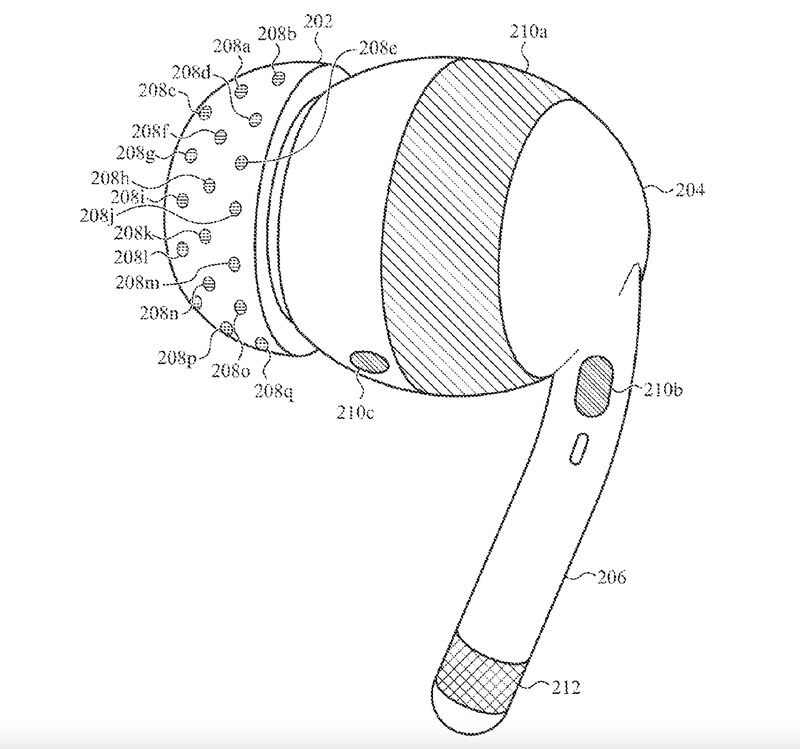

Wearables
Orion
Meta Ray Bans
- The Meta Ray-Ban smart glasses, developed in partnership with EssilorLuxottica, offer a range of advanced features in a stylish form factor. Here’s a technical overview:
Hardware
- Camera: 12 MP ultra-wide camera for photos and 1080p video recording
- Processor: Qualcomm Snapdragon AR1 Gen1 Platform
- Audio: Custom-designed speakers with improved bass and directional audio
- Microphones: Five-microphone array for immersive audio recording
- Battery: Redesigned charging case with up to 36 hours of total use
Key Features
- Hands-free photo and video capture
- Live streaming to Facebook and Instagram
- Voice commands for various functions
- Open-ear audio for music and calls
- Water-resistant (IPX4 rating)
- Integration with Meta AI assistant
Design
- Available in Wayfarer and new Headliner styles
- Multiple color options, including transparent frames
- Prescription-lens compatible
- Reduced weight and slimmer profile for improved comfort
- The Meta Ray-Ban smart glasses have been well-received, with reports indicating that around 1 million units have been shipped since their launch. To be clear, this modality of vision AR and AI is the future of all of this stuff. VR is still very poorly adopted and unloved, given the investment.
- To reach this Meta is developing full AR glasses codenamed Orion, slated for release in 2027. These glasses are designed to work in tandem with a neural interface wristband, allowing for gesture-based control and potentially revolutionizing how we interact with digital content in the physical world.
Rabbit
- Features:
- Designed by Teenage Engineering Co
- Agentic (connect it to your data and it does stuff)
- Needs to be connected to a lot of different user data sources
- I’m sceptical, but it’s a nice effort.
- It’s cheap, I would totally give this to a kid over a mobile phone. £200 all in?!?
- It sold out immediately.
- {{tweet https://twitter.com/rabbit_hmi/status/1744781083831574824}}
Neural Interfaces
EMG Wristbands
- Meta’s EMG wristbands use electromyography to interpret electrical signals from the brain that control hand movements1. This technology allows for seamless and precise interactions with digital objects in virtual and augmented reality environments without the need for external cameras or sensors1.The wristbands contain embedded sensors that capture subtle electrical signals transmitted from the brain to the hands. These signals are then translated into precise commands, enabling real-time interaction with virtual environments1.
- Meta are Enhancing VR Experiences with Neural Wristbands
Key Features and Benefits
- Precision and Intuitiveness: The EMG technology can detect even the tiniest muscle movements, allowing for fluid and responsive interactions in VR and AR1.
- Non-Invasive: The wristbands offer a non-invasive way to capture neural signals, making the technology more accessible and user-friendly1.
- Versatility: The wristbands can be used for various applications, from simple object recognition to fully immersive environments1.
- Adaptive Learning: The neural interface continuously improves its understanding of each user’s unique movements over time, enhancing the overall experience5
- At present, the EMG wristbands can provide basic input commands, such as:
- Finger taps (index and middle finger
- D-pad-like gestures
- Simple hand movements2
- While these inputs are currently limited, Meta’s CTO Andrew Bosworth suggests that the technology could evolve to become an increasingly universal interface over time2.
Smart Rings - sticky sensor tech
Oura Smart Ring
- Description: A ring that tracks overall health, focusing on sleep quality, activity levels, and readiness. Finland, not new, fairly mature.
- Features:
- Sleep tracking with detailed stages
- Body temperature sensor
- Heart rate and HRV tracking
- 7-day battery life
- Waterproof and sleek design
- AI Aspect: Employs AI to analyze data and provide personalized health insights and recommendations.
Amazfit Smart Ring
Rewind Pendant
- Description: A wearable device designed to aid memory by passively capturing audio throughout the day.
- Features:
- Auto-records ambient sound
- Privacy-focused with user-controlled storage
- Lightweight and can be worn as a necklace
- Integrates with an app for audio playback
- AI Aspect: Uses AI to intelligently capture and categorize important sound bites.
Humane Ai Pin
- twitter link to the render loading below {{twitter https://twitter.com/jaredostdiek/status/1768674773389713645}}
- Description: A wearable device focused on interaction and connectivity, emphasizing humane and natural tech usage.
- Features:
- Connects with various apps and services
- Aims for minimal and non-intrusive notifications
- Includes a camera and interactive display
- Designed to promote ethical AI and user-friendly interfaces
- AI Aspect: Integrates AI for intuitive interactions and ambient computing.
- This attempt at a wearable has been roundly panned by early adopters and reviewers.
Apollo Neuro
- Description: A wearable wellness device that uses touch therapy to help the body adapt to stress.
- Features:
- Delivers gentle vibrations to improve stress resilience
- Modes for sleep, focus, relaxation, and more
- Wearable on the wrist or ankle
- App-controlled
- AI Aspect: Utilizes AI to personalize and adapt therapy based on user feedback and usage patterns.
Pavlok 3
- Description: A behavior modification wearable that uses mild electric shock to help break bad habits. (weird)
- Features:
- Delivers a mild shock to discourage bad habits
- Tracks sleep, steps, and hand motions
- Programmable via an app
- Community challenges and support
- AI Aspect: Utilizes AI to learn patterns and optimize intervention timing.
Yopi
- Description: A voice-based wellness coach focused on improving breathing and reducing stress.
- Features:
- Monitors breathing patterns
- Provides real-time feedback and coaching
- Portable and pairs with smartphones
- Focus on breathing exercises and meditation
- AI Aspect: Uses AI to customize breathing exercises and track progress.
ChatGPT (and whatever Siri becomes) is coming to watches
- Description: A concept of smartwatches integrated with AI for interactive and adaptive communication.
- Features:
- Voice and text-based interaction with AI
- Integration with various apps and services
- Notifications, reminders, and AI-driven suggestions
- Continuous updates and learning capabilities
- AI Aspect: Incorporates a conversational AI model for real-time communication and assistance.
- Translation earbuds |Translator | language translation device – Mymanu® -
Open Source
-
- Description: An open source AI wearable device that captures what you say and hear in the real world and then transcribes and stores it on your own server. You can then chat with Adeus using the app, and it will have all the right context about what you want to talk about
- a truly personalized, personal AI.
-
OwlAIProject/Owl: A personal wearable AI that runs locally (github.com)
- Owl is an experiment in human-computer interaction using wearable devices to observe our lives and extract information and insights from them using AI. Presently, only audio and location are captured, but we plan to incorporate vision and other modalities as well. The objectives of the project are, broadly speaking:
-
- For HA←>Ollama: https://github.com/jekalmin/extended_openai_conversation
- Hardware: https://www.espressif.com/en/news/ESP32-S3-BOX-3
- https://github.com/ollama/ollama/blob/main/docs/openai.md
- https://github.com/kahrendt/microWakeWord/issues/2
- https://github.com/jaymunro/esphome_firmware/blob/main/wake-word-voice-assistant/esp32-s3-box-3.yaml
- Actually you can do full two way conversations! Here’s a PR someone has in progress to officially add it to esphome - https://github.com/esphome/firmware/pull/173
-
Your very own private AI that you can ask questions and get answers, all in a tiny box! The first AI that you can talk to, and that talks back, **running locally with no internet connection** so your conversations and data are completely secure. No account, setup, or subscription are needed, just plug in the box and start chatting. Need closed captions for a live event, or just to help in situations where you have trouble hearing a conversation? We’re using the latest in AI technology to display subtitles based on the audio input, which are output on the built-in display and through an HDMI connector for external monitors or screens.- [usefulsensors/useful-transformers: Efficient Inference of Transformer models (github.com)](https://github.com/usefulsensors/useful-transformers) -  -
Phones
Samsung Galaxy S24 Series Local AI Inferencing Features
- Live Translate for real-time voice and text translations directly within the phone app, functioning without the need for an internet connection.
- Chat Assist in Samsung Keyboard for real-time translation in 13 languages, enabling on-device translation for messages.
- Android Auto’s capability to summarize messages and suggest relevant replies, powered by on-device AI, for safer driving experiences.
- Note Assist for generating AI-powered summaries of notes taken within Samsung Notes, improving organization and retrieval of information.
- Transcript Assist uses on-device AI for transcribing and summarizing voice recordings, identifying different speakers and translating content.
- Edit Suggestion feature that uses on-device AI to suggest photo edits, enhancing the photography experience without the need for server processing.
- Generative Edit for intelligently filling in parts of an image background, providing users with AI-powered content creation tools.
Google sub second inferencing on a phone.
- [Paper page
- MobileDiffusion: Subsecond Text-to-Image Generation on Mobile Devices (huggingface.co)](https://huggingface.co/papers/2311.16567)
Training and inferencing hardware
- Chips and Hardware and Edge technologies are rapidly advancing to support the growing demands of artificial intelligence applications.
- For more insights on this topic, visit Etched.
- Cristiano Amon: generative AI is ‘evolving very, very fast’ into mobile devices (FT.com) highlights the necessity for dedicated computing resources in mobile devices.
- As Amon explains, while tasks can be executed on a CPU or GPU, these processors are often preoccupied with other functions. This multitasking can hinder performance when running complex AI algorithms.
- To address this challenge, there is a push towards implementing dedicated accelerated computing solutions. This includes the integration of Neural Processing Units (NPUs), which are specifically designed to handle AI workloads efficiently.
- NPUs enable faster processing speeds and lower power consumption compared to traditional CPUs and GPUs, making them ideal for real-time applications such as image recognition, natural language processing, and augmented reality experiences.
- The evolution of these technologies signifies a pivotal shift in how we approach AI deployment across various platforms, particularly in mobile environments where resource constraints are prevalent.
- You’re going to see devices launch in early 2024 with a number of Proprietary Large Language Models use cases. It has the potential to create a new upgrade cycle on smartphones. And what we want is that eventually you’re going to say, you know, “I’ve been keeping my phone for the past four years … Now I need to buy a new phone because I really want this gen AI capability
- VR and AI
- We are seeing gen AI coming into VR. We see an incredible potential for augmented reality and mixed reality glasses, especially as you use audio and large language models as an interface. We have been very bullish about spatial computing being the new computing platform, and we see a lot of promising developments coming: we see what Meta is doing, we see what is happening on the Android ecosystem with Google and Samsung. We are just at the beginning.
- Bloomberg reports Sam Altman is in talks to raise money for a ‘global’ network of fabricators building hardware for AI. Sam Altman’s plan to establish a global network of AI chip factories could revolutionize the tech industry, reducing dependence on existing semiconductor giants and ensuring a steady supply of AI advancements.
- The Groq LPU™ Inference Engine - Groq Asic
- Chat with RTX Now Free to Download | NVIDIA Blog
- AMD Instinct™ MI300 Series Accelerators
- IBM custom board
- Nvidia jetson AI
- install cuda
- Qualcomm phone SD
- Esperanto RISC V
- The MetaVRain asic claims 900x speed increases} on general GPU problems
- Google android etc
- Intel meteor lake?
- Shopify handy
- Comparison of GPUs
- LLM on Intel XEON optmised
- TPU v4 matrix multiplier
- Tinygrad tinybox
- Snapdragon 8 inference Qualcomm has launched its latest flagship chip, the Snapdragon 8 Gen 2, which is expected to power most Android smartphones next year. The new chip is more power-efficient and powerful compared to its predecessor Gen 1, and features significant improvements and new features in AI. The new Qualcomm AI engine offers an AI performance improvement of up to 4.35x and up to 60% better power efficiency. There is a new direct link between the Hexagon AI cores and the Spectra imaging cores, providing real-time semantic segmentation, and the Sensing Hub has two AI processors and more memory for smarter always-on features. The Kryo CPU cores have also been updated, with four performance cores and three efficiency cores, optimising them for legacy 32-bit apps. On the GPU side, the new Adreno cores support hardware-accelerated raytracing and Unreal Engine 5’s Metahumans technology. The X70 modem supports 4-carrier aggregation for downlink speeds of up to 10 Gbps, while the onboard FastConnect 7800 system is the first to support Wi-Fi 7 with High Band Simultaneous Multi-Link. https://www.phonescoop.com/articles/article.php?a=22911
Consumer Hardware
- Sideloaded app stores are coming to iOS in the EU (thenextweb.com)
- AI HoloBox: ChatGPT-Powered Holographic Desktop Companion by AI HoloBox — Kickstarter
- I don’t personally think any of these wearables and gadgets “break through” vs watches, but I can see the next generation of watching inferring a LOT more and containing MUCH more functionality. People will wear watches. Sometimes.
HCI and interfaces
Edge
- Edge compute refers to the practice of processing and analyzing data as close to the source as possible, which is typically at the edge of a network. This approach aims to reduce latency and network congestion by performing computations and running applications on devices such as sensors, gateways, or edge servers located near the data source. By moving computational tasks closer to where the data is generated, edge compute enables real-time and low-latency decision-making.
- Edge AI, also known as AI at the edge or on-device AI, refers to the deployment of artificial intelligence and machine learning algorithms on edge devices. By bringing AI capabilities closer to the data source, Edge AI eliminates the need to transmit large volumes of data to the cloud for processing. This approach enables real-time inference and decision-making directly on devices with limited computing resources, such as smartphones, drones, or IoT devices. Edge AI has several advantages, including reduced latency, improved privacy and security, offline functionality, and the ability to operate in disconnected or bandwidth-constrained environments.
- Fog compute, on the other hand, extends the concept of edge compute by introducing a hierarchical architecture. It involves distributing computing resources, storage, and applications between the cloud and edge devices. In the fog computing model, intermediate fog nodes are deployed between edge devices and the cloud, enabling them to process and store data. This approach reduces the need for data to be transmitted to traditional data centers or the cloud, allowing for faster response times, increased security, and better bandwidth utilization.
- Overall, the combination of edge compute, fog compute, and edge AI introduces a distributed computing paradigm that brings processing, storage, and intelligence closer to the data source. This not only improves performance and efficiency but also enables new use cases and applications in various domains, including IoT, smart cities, autonomous vehicles, and industrial automation.
- These systems will drive the compute to less ‘constrained’ but somewhat less capable AI systems, distributing the access but increasing risks. Update Cycle
Edge AI compute and APUs
- Qualcomm phone chip offers low power and high speed Stable Diffusion on mobiles
- IBM have introduced the concept of the AIU, for high speed and low power training
- Nvidia’s latest in the Jetson Edge AGX line is a high performance general AI unit for industrial applications
- Esperanto Risc V chip claims incredible performance gains
- The MetaVRain asic claims 900x speed increases on general GPU problems
- Microsoft are rumoured to be looking to mitigate the staggering costs of running ChatGPT ($1M/day) using forthcoming hardware of their own design
- Cerebras systems have built an AI architecture from the ground up and claim incredible numbers.
- [Ushering in the Thermodynamic Future
- Litepaper (extropic.ai)](https://www.extropic.ai/future)
- Tenstorrent Grayskull Hardware and Edge [Cards
- Tenstorrent](https://tenstorrent.com/cards/) -
Displays
Displays & Headset Hardware
- Awaiting a bit more market stability for this section. Of note is thatMicrosoft seems to be abandoningHololens,and Apple seem to have postponed their commodity AR headset.
- Microsoft think that creating the Perfect Illusion, that of alife-likeness in VR will require a field of view of 210 horizontal and135 vertical, 60 pixels per degree subtended, and a refresh rate of 1800Mhz according to Microsoft. They expect this by as soon as2028.cuervo2018creating
- With the advent ofWebGPUalongside WebGL everything is likely to converge on the browserexperience.
- {{renderer :linkpreview,https://skarredghost.com/2024/04/01/valve-deckard-leaked/}}
The Apple in the Room
- Following the announcement of The Apple Vision Pro we start to see theconvergence of spatial computing, mixed reality, locally appliedtransformer based AI, and business. They have perhaps removed “gorillaarm syndrome”boring2009scroll where hands in the sky interfaces arepotentially uncomfortable over long periods.hansberger2017dispellingNathan Gitter and Amy DeDonato from the Apple Design team introducespatial design for thedevice.
Spatial operating systems
-
- Enabling users to design experiences not previously possible.
-
- The presentation outlines how to keep apps familiar, be human-centered, take advantage of space, enhance immersion, and make apps authentic to the platform.
-
- The world serves as an infinite canvas for new apps and games.
-
- Existing app elements should be kept familiar with common elements like sidebars, tabs, and search fields.
-
- In a spatial platform, interfaces are placed within windows to make them easily accessible and part of the user’s surroundings.
Windows in Spatial Design
-
- Windows are designed with a new visual language, made of a glass material that provides contrast with the world, awareness of surroundings, and adapts to different lighting conditions.
-
- Windows can be moved, closed, and resized by users, with windows facing the user during movement.
-
- Windows are flexible and can be resized to fit comfortably within the user’s view.
-
- Choosing Window Size and Layout Windows are designed to be flexible, adapting to content, and the window size should be chosen based on this. Windows can change size dynamically based on context.
-
- Apps can use multiple windows to display content side by side or show distinct actions, but should ideally stick to a single window to avoid user overwhelm.
Designing with Points
-
- Interfaces are designed with points to ensure they scale well and remain legible at different distances.
-
- Points allow designers to set the size of interface elements with familiar units. Human-Centered Design
-
- Good spatial design places the user at the center, accounting for their field of view and movement.
-
- The most important content should be placed in the center of the field of view and use landscape layouts.
-
- Ergonomics should also be considered, placing content along a natural line of sight for comfort.
-
- Designers should avoid placing content behind users or anchoring content to their view as it can be disorienting.
-
- Spatial design should aim to create stationary experiences that require minimal movement from users.
User Mobility
- The presentation emphasizes the importance of designing applicationsthat require minimal movement from users. It recommends usingsystem-level recentering methods to adjust the app’s view when a usermoves.
Space Utilization
- The importance of optimizing an app’s usage of space is discussed, asthe available physical space for users can vary. It advises againstconstraining your app based on the physical space available and insteadcreating an app that can function in any amount of space.
Dimensionality
- The use of depth and scale in designing the user experience isemphasized. Depth can help with hierarchy and focus, and scale can beused to emphasize content. The text warns against overusing depth,especially with text, and encourages developers to experiment with scaleto achieve the desired user experience.
Immersiveness
- The passage introduces the concept of an immersion spectrum, where anapp can transition between various states of immersion based on theuser’s experience. The importance of smooth transitions, designing withconsideration to user focus, thoughtful blending with reality, andkeeping the user comfortable are emphasized.
Sound Design
- It also highlights the importance of using spatial audio to enhance theimmersive experience of an app, which includes attaching sound toobjects and creating soundscapes.
User Comfort
- Recommendations for moving an immersive app, focusing on avoidingdisorienting fast movements and instead recommending fade out and fadein techniques to keep the user comfortable during motion.
Transitions
- It highlights the importance of clear, intuitive methods for enteringand exiting immersive experiences. It suggests using easily recognizablesymbols, such as arrows for expanding or collapsing views.
Authenticity
- Emphasizes creating an authentic experience that takes full advantage ofthe platform’s capabilities. An example given is Freeform, which uses alarge creative space allowing users to view all their content at once.
Key Moments
- Focusing on a “key moment” that provides a unique spatial or immersiveexperience is recommended. This could involve enhancing a moment withdepth and scale or transforming the user’s space to create a unique andmemorable experience.
- Lightfield
- Infitec shows holographic projection screens (installation-international.com)
- HYPERVSN is a 3D Integrated Holographic System for advertising, digital signage, events.
- {{video https://www.youtube.com/watch?v=DxkIo-2Jzzo&}}
Brain
- Apple has submitted a patent application that raises some serious privacy and ethical concerns.
- From this post

- The US Patent and Trademark Office lists application 2023/0225659 as a “biosensing device” built into Apple’s earbuds to measure “biological signal parameters from a user.”
- 👉 Electroencephalography (EEG). In other words, the aim is to directly record the user’s brain waves from tiny sensors positioned within the ear canal.
- 👉 Electromyography (EMG). This records muscle movements and the information can be used to help understand facial expressions and jaw movements related to emotion.
- 👉 Electrooculography (EOG) tracks eye movements, particularly side-to-side.
- 👉 Electrocardiogram (ECG) typically measures the electrical activity of the heart.
- 👉 Galvanic skin response (GSR), which provides an indirect measure of emotional arousal – that is, the strength of an emotional response.
- 👉 Blood volume pulse (BVP). This is measured using photoplethysmography and provides information about heart rate (HR) and heart rate variability (HRV).
- In other words, the aim is to collect a very comprehensive set of neurological and biometric data from the user. Creepy, right?!
- It’s unclear to me how you could even record meaningful data from within the ear.
- If this kind of interface goes ahead it should be
-
- Voluntary. Participants should not be forced or deceived into providing physiological or neurological data. Volunteers at liberty to stop at any time.
-
- Limited. Personal data may only be collected for a specific, explicit and legitimate purpose. This purpose must be clearly stated, and only stored as long as needed to complete that purpose.
-
- Transparent. Requires informed consent including being aware the data are being collected and knowing the risks involved, including whether the information will be shared with other organizations.
-
- Autonomy. Free from manipulation. Participants should not be forced or deceived into making decisions they would not otherwise make.
-
- Valid. Must be based on valid science and led by scientifically trained staff.
-
- To my mind, this application potentially violates 4 out of 5 of these principles (I don’t see any evidence of manipulation) and this makes me deeply uneasy!